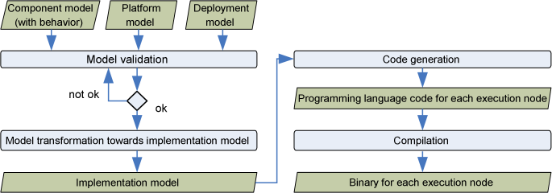

Overview
SW Designer Designer is a component based modeling approach that supports the code generation from embedded
systems. Theses systems are characterized by timing and resource constraints - sometimes also
denoted as non-functional properties. Since these systems get more and more complex, it is important
that the non-functional properties are not just specified in the documentation and respected by the
implemented system, but that these are explicitly modeled and suitable code is derived from the model.
SW Designer Designer is part of the SW Designer tool-suite integrated into Papyrus. The separation of concerns between
the two tools is that
- SW Designer analyzer analyzes a system, in particular with respect to schedulability
analysis. It enables the validation of several variants to allocate software components to execution
resources and thus provides an architectural exploration
- SW Designer designer supports the code generation for a specified architecture. It enables this code
generation by means of a sequence of transformations steps and a final code generation step as
shown in the figure below.

SW Designer is integrated into the open source UML editor Papyrus,
The UML profile MARTE is used for non-functional properties.
Parts of the component model were developed in the context of the French national project Flex-eWare.
In the sequel, you find information about the
We also recommend the examples section in the documentation index as a starting point for using SW Designer, as well as the SW Designer wiki page.